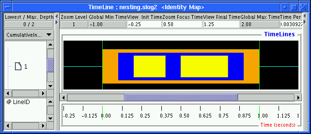

So far only one of the representations of the preview state, CumulativeInclusionRatio, has been used to illustrate the concept and representation of the preview state. Jumpshot-4 actually uses several different representations of the preview state. All these representations are based on two ratios stored in the SLOG-2 file: inclusion ratio and exclusion ratio2.6. The inclusion ratio is computed without taking into account the nesting order of the states. States that either are nested inside or enclose other states contribute equally to the inclusion ratio. The result is that the sum of all inclusion ratios from all state categories in a preview state could easily be larger than 1. On the other hand, the exclusion ratio is specifically computed to exclude the overlap of the nested state from the enclosing state. Therefore the sum of exclusion ratios of all state categories in a preview state is guaranteed to be less than or equal to 1.
The motivation for computing these two ratios is to satisfy two opposite needs of the preview state. The MPI application developer who has put a lot of user-defined states in a SLOG-2 file, through either MPE or AIX's PCT utility, is likely to be interested in the profiling information of the user-defined states that enclose MPI states and other user-defined states. In this case, the inclusion ratio will be useful. The inclusion ratios of user-defined states usually dominate all state inclusion ratios, including those of MPI states. Therefore, the inclusion ratio highlights the outermost enclosing states, even at a high preview level. On the other hand, the MPI implementor or the person interested in the low-level MPI networking overhead is likely to be interested in the profiling information of MPI and its internal calls. The exclusion ratio will come in handy here. Exclusion ratios for the innermost nested states (i.e., MPI states) tend to dominate all state exclusion ratios. So the exclusion ratio highlights the innermost nested states at a very high preview level.
|

|
Figure 2.6 shows a typical zoomed-in view of some nested states. In this view, the yellow states are deeply nested in the navy-blue state, which is in turn nested in the orange state. The pair of green lines mark the region where a preview state is being created.
|
The inclusion and exclusion ratios are computed for the region marked by the pair of green lines and are shown in Table 2.2. As the table shows, the most dominant state among all inclusion ratios is the orange outermost state, but the most dominant state among all exclusion ratios is the yellow innermost state, which is the least dominant state in inclusion ratios. One obvious observation is that the inclusion and exclusion ratios of the innermost state category are the same.

|
With the data computed in Table 2.2, various different preview displays can be drawn and are shown in Figure 2.7. All colored strips inside the preview state will be drawn proportional to the height of the preview state. For instance, if the ratio of the category for the strip is 0.9, the corresponding colored strip will occupy 90% of the preview state's height. This statement is true for all preview state displays except CumulativeInclusionRatio, which may have its total sum of ratios in excess of 1.0, especially when the slog2 file is highly nested. First consider the CumulativeInclusionRatio and CumulativeExclusionRatio views (i.e., the first and the third ones from the top in the figure). Notice that yellow state is the least important in the top CumulativeInclusionRatio view but becomes the most significant in the third CumulativeExclusionRatio view. Since the sum of all inclusion ratios is larger than 1 (in this case, the sum is 2.3), the CumulativeInclusionRatio view reweights all ratios to fill up the preview box. Strictly speaking, the CumulativeInclusionRatio view cannot be used to compare different preview states because of the arbitrary rescaling.2.7 If one is interested in comparing inclusion ratios across different preview states, the OverlapInclusionRatio view can be used instead. This view draws all inclusion ratios proportional to the height of the preview state but in an overlapping way, that is, in order of decreasing inclusion ratios, and stacks one on top of the other (somewhat like a nested state). The overlap view of exclusion ratios is the OverlapExclusionRatio view, shown at the bottom of Figure 2.7. The OverlapExclusionRatio view draws exclusion ratios exactly the same way as does the OverlapInclusionRatio. In general, an overlap view cannot fill up the full height of the preview state. This is apparent in the OverlapExclusionRatio view in Figure 2.7, where the white bordered box indicates the full height of the preview state. The white bordered box is necessary in comparing the ratios across different preview states with respect to the preview states' duration. The white bordered box can sometimes be confusing, however, because whatever is in the back of the preview state can show through the empty space within the white bordered box. In that case, the bordered box can be turned off by selecting Empty in the PREVIEW_STATE_BORDER in the Preference window.
For the sake of comparison and continuity with our preview discussion, the CumulativeExclusionRatio view of Figures 2.1 and 2.2 are shown in Figures 2.8 and 2.9, respectively. The CumulativeExclusionRatio view provides an extra dimension of information compared with its inclusion ratio counterpart, at the expense of being a bit more complicated visually.